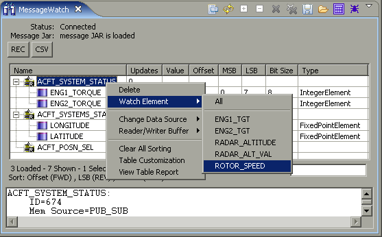

Adding Elements
What it does
Adds message elements to the Message Watch tool.
How to do it
Right-click on an existing message. From the menu, choose "Watch Element",
then select either "All" or the specific message element desired.
Alternatively, messages/elements can always be added using the
Message View tool.
